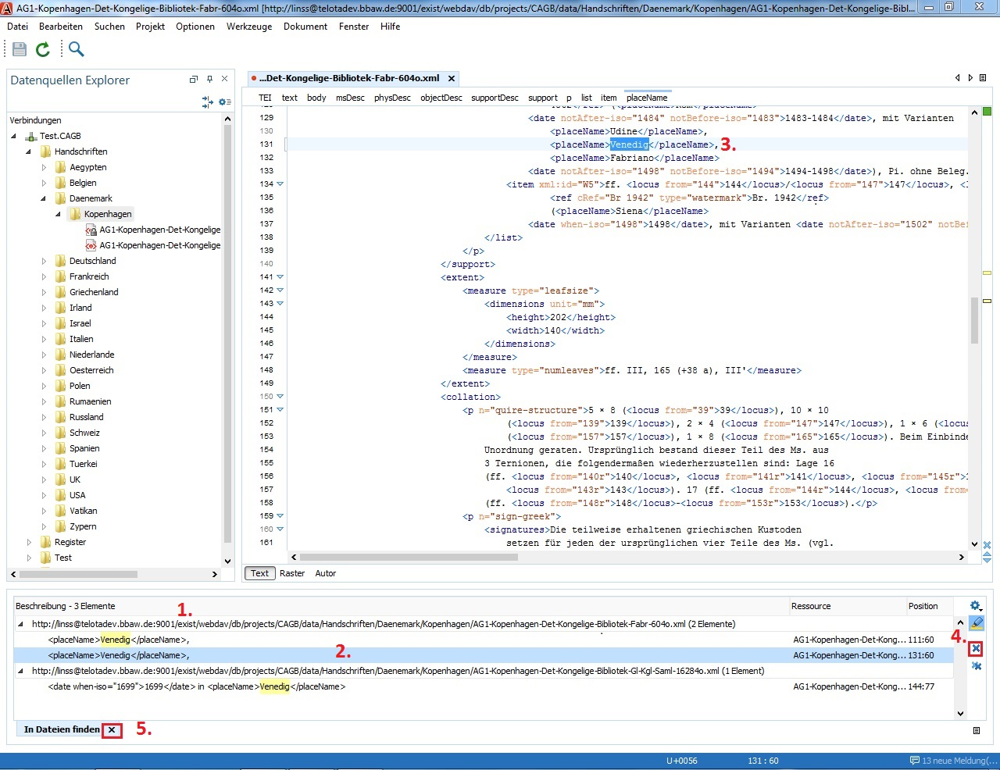

Über den Punkt „Finden/Ersetzen in Dateien“ im Kontextmenüs des Dateibaums kann nach bestimmten Wörtern oder Wortteilen gesucht werden.
Das Verzeichnis, in dem gesucht werden soll, wird dadurch bestimmt, welcher Ordner (bzw.) auch Datei bei Aufruf des Kontextmenüs ausgewählt wird. Soll beispielsweise nur in den Briefen gesuchten werden, so muss das Kontextmenü mit einem rechten Mausklick auf dem Ordner „briefe“ aufgerufen werden.
Einfache Suche
1. Rechter Mausklick auf das Verzeichnis, das durchsucht werden soll.
2. Im erscheinenden Kontextmenü „Finden/Ersetzen in Dateien“ auswählen.
3. Im erscheinenden Dialogfenster den Suchbegriff (oder mehrere Begriffe) im ersten Eingabefeld eintragen.
4. Darauf achten, dass „Unterverzeichnisse einbeziehen“ angekreuzt ist.
5. Auf [Alle suchen] klicken
Klicken Sie nicht auf [Alle ersetzen] bzw. brechen Sie den Vorgang ab, sobald Sie
gefragt werden "Sind Sie sich, dass Sie fortfahren möchten" - [Nein]. Ansonsten werden
unwiderrufliche Ersetzungen vorgenommen.
Suchergebnisse
Die Suchergebnisse werden in einem neuen Fenster unten (1) ausgegeben. Geordnet nach Dateien sind dort jeweils in einer Zeile die gefundenen Ergebnisse mit ihrem Kontext angegeben. Ein Doppelklick auf eine Ergebniszeile (2) öffnet die entsprechende Datei. Die gesuchte Stelle wird auch im nun geöffneten Dokument (3) markiert. Mit Hilfe des blauen [x] am rechten Rand der Ergebnisliste (4) kann man einzelne Treffer aus der Ergebnisanzeige löschen. Ein Klick auf [x] im Karteikartenreiter unten (5) schließt die Suchergebnisanzeige.
1. Suchergebnisanzeige (erscheint nach Abschicken der Suche)
2. Ein markierter Treffer
3. Suchbegriff ist im geöffneten Dokument markiert
4. Einzelne Treffer aus der Trefferliste löschen
5. Suchergebnisliste schließen